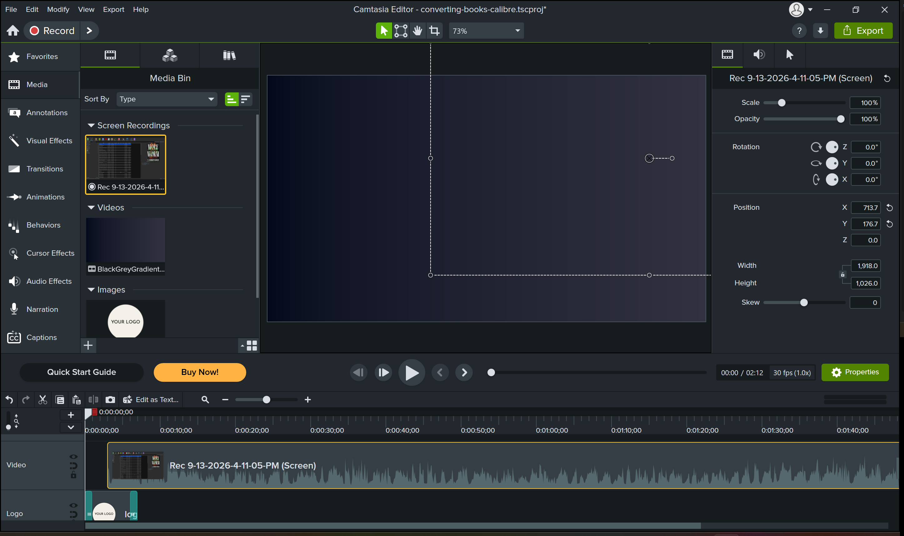
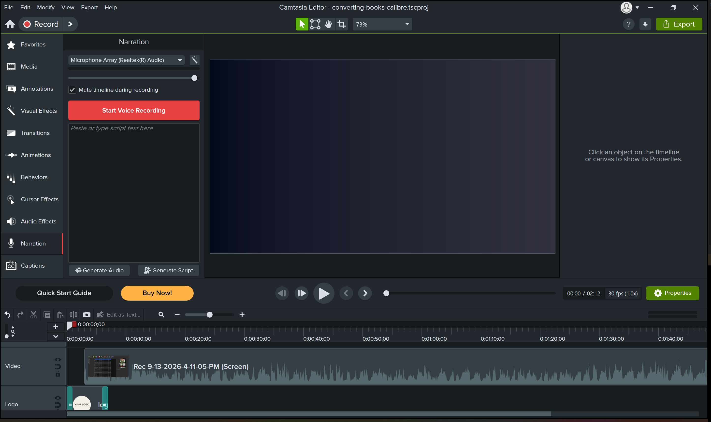
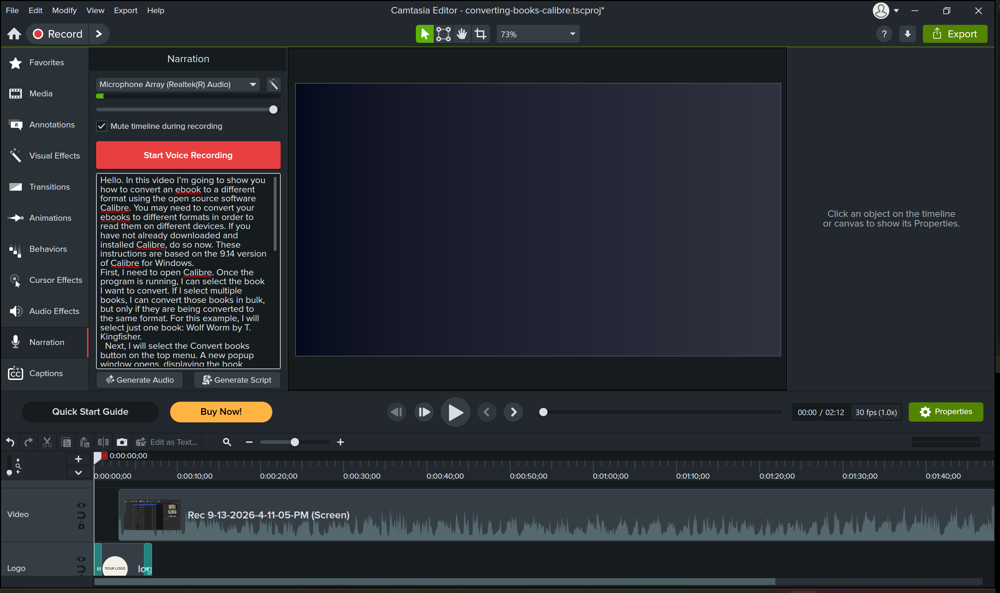
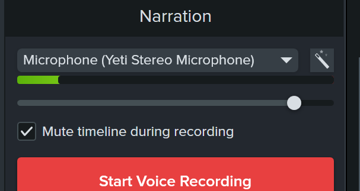
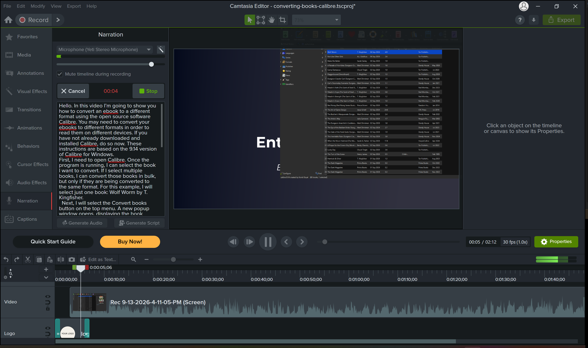
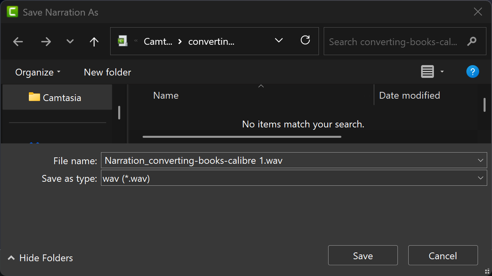
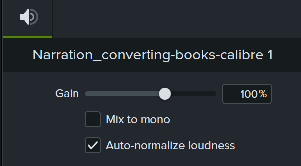
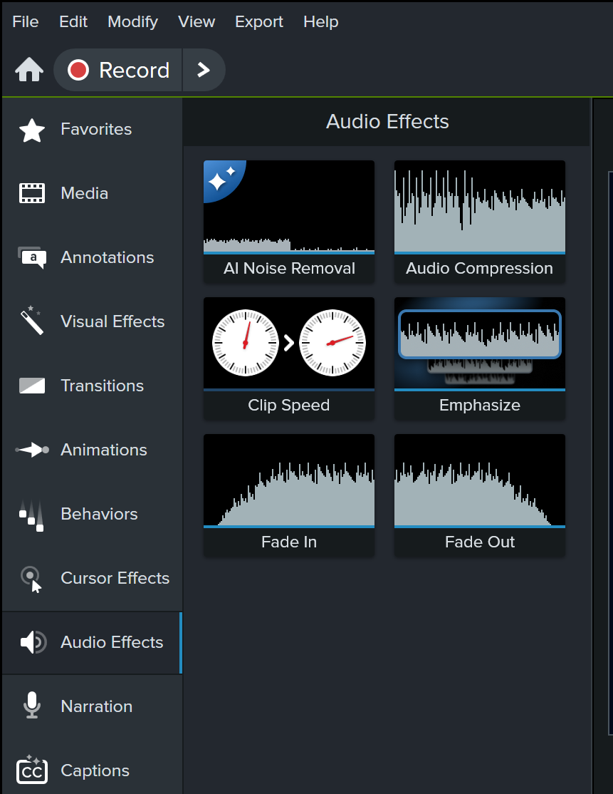

Recording Best Practices
Prior to recording:
- Trim your video if needed to eliminate any errors or long pauses.
- Practice timing by watching your video recording a few times before you do your first take.
- Make sure you are in a quiet place and silence sources of ambient noise if possible.
- Use the best microphone you have access to.
- Take multiple recordings and select the best.
- Silence notifications.
How to Enter Your Script Into Camtasia
| Instruction | Screenshot |
|---|---|
| 1. Select Voice Narration in Camtasia. |  |
| 2. Copy and paste the Narration column of your script into the script text box. |  |
How to Record a Voiceover
| Instruction | Screenshot |
|---|---|
| 1. Drag the playhead to the start of your video recording. |  |
| 2. Verify that the correct microphone is selected and that Mute timeline during recording is checked. Select Start Voice Recording. |  |
| 3. Read your script while the video plays, taking care to time your lines with the corresponding actions on screen. Note: Whether or not you read the script while screen recording, you may need to adjust the timing of clicks and actions on screen. You can do this after recording your voiceover while editing your video. Select Cancel if you need to restart the recording. Select Stop to end the recording. |  |
| 4. Enter a descriptive name for the voiceover recording and select Save. |  |
| 5. Check Auto-normalize loudness, then save your progress. If your audio is too loud or too quiet, you can adjust the Gain. Note: If you do not see these options, select Properties. |  |
| 7. Select the Audio Effects tab on the left, then drag and drop the Audio Compression effect to your audio track. You can adjust the volume variation in the Properties window; Low variation often produces the clearest sound. If your audio has a lot of background noise, you may also want to drag and drop AI Noise Removal to your audio track, also found under Audio Effects. You can adjust the degree of noise removal in the Properties window. |  |